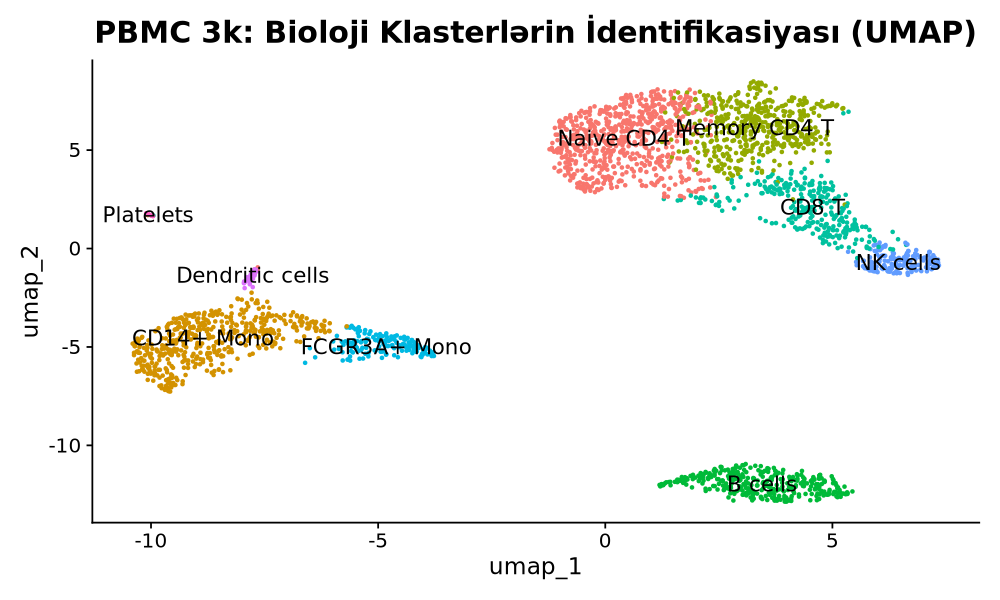
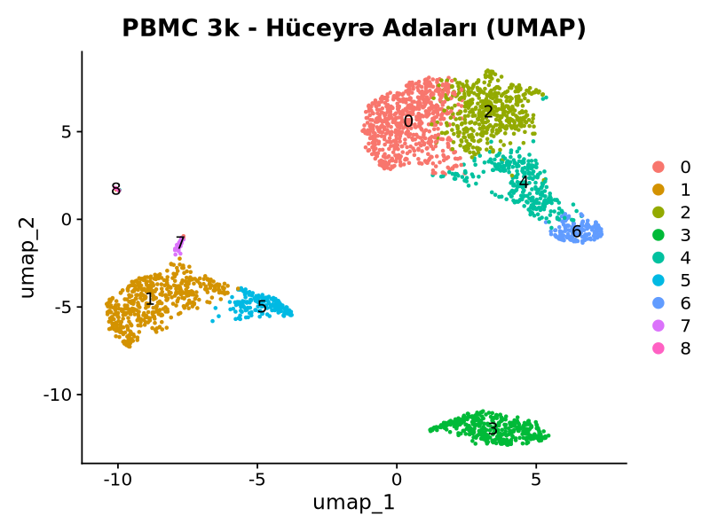
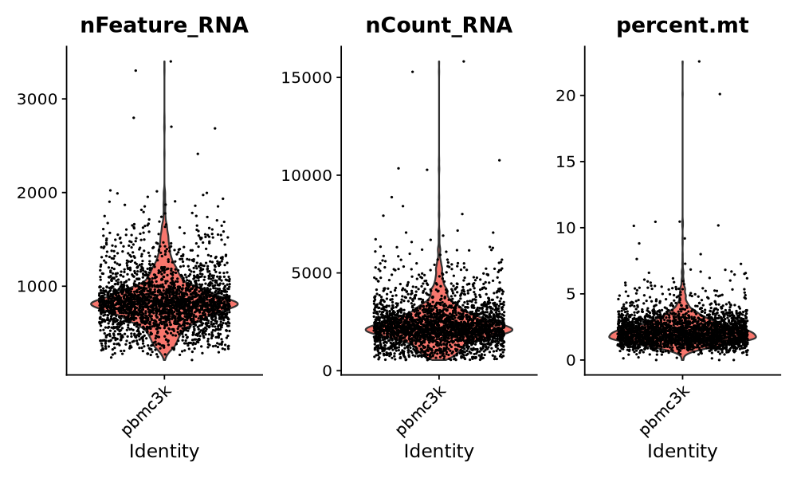

🔬 Cellular Heterogeneity
⚡ 10x Genomics Chromium
🧬 Seurat v4 Workflow
9 Distinct Clusters
Single-Cell RNA-Seq & Microenvironment Deconvolution
High-throughput single-cell profiling resolving peripheral immune cell subtypes and tumor microenvironment leukocytes using Seurat v4, PCA dimensional reduction, and unsupervised Louvain graph clustering.
🧪
Quality Control & Preprocessing Protocol
Low-quality droplets, empty barcodes, and apoptotic cells are removed using three stringent bivariate statistical thresholds:
- Gene Detectability:
200 < nFeature_RNA < 2,500(filters cellular debris and multiplet doublets). - Sequencing Depth:
nCount_RNAmonitored for uniform library saturation. - Mitochondrial Fraction:
percent.mt < 5%(eliminates lysed cells leaking cytoplasmic mRNA). - Feature Selection: Identification of the top 2,000 highly variable features (HVGs) using the
vstselection method.
🗺️
Dimensional Reduction & Cell Annotation
Top 10 principal components selected via Elbow Plot analysis serve as coordinates for shared nearest neighbor (SNN) graph construction and UMAP projection:
- CD4+ T Cells (IL7R, CCR7): Central memory and naive CD4+ populations.
- CD8+ T Cells (CD8A, GZMK): Cytotoxic effector lymphocytes.
- B Cells (MS4A1, CD79A): Mature humoral antibody-producing lineages.
- NK Cells (GNLY, NKG7): Innate anti-tumor perforin/granzyme effectors.
- Monocytes (CD14, FCGR3A): Classical and non-classical antigen-presenting phagocytes.
- Dendritic Cells (FCER1A, CST3): Professional antigen cross-presenters.
| Marker Gene | Cluster ID | Avg log&sub2;FC | Detection in Cluster (Pct.1) | Background Detection (Pct.2) | Adjusted P-val |
|---|---|---|---|---|---|
| Loading single-cell markers... | |||||


